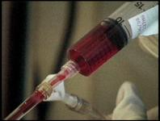
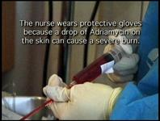
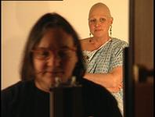
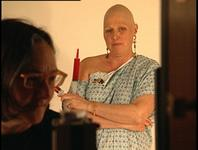

| <Pizza | Libby> |
{kind=link}
I was completely freaked out when my hair grew back curly. I couldn't believe it. I had very long, dark, straight hair. It had maybe a little bit of curl but it grew back and it's continuing to be very, very curly, which is really kind of ironic because when I was a little girl, that's all I dreamed of, having long, curly hair.
When my hair started growing back and it was growing back curly, I met some woman on the street and she said, Oh! I love your hair! Where did you get it done? And I said, Oh, I got it done at Dana Farber Cancer Institute. So I kind of shocked her, and I apologized: Sorry, I didn't mean to say that, but it was pretty funny, your asking me like that.
On October 23, 1997 I was diagnosed with breast cancer. It was pretty dramatic and traumatic and pretty devastating, and it changed my life a lot.
I don't know why, but when I was younger, I always wondered how a doctor would tell somebody that they had cancer. Would they come in and say you have cancer, or oh, I'm sorry, you have cancer, or would they come in and say oh, no, things aren't too good, it's not good.
When I was told, it was after a biopsy. I had been told by two breast surgeons that it did not look like cancer, that it was not cancer, that it was this lump in my right breast, but I should get it out because who wants a lump in their right breast? So, I went into the hospital and had a biopsy. During the biopsy, the surgeon said, Oh, this looks good, this looks great. I wasn't stressed because I wasn't worried about anything. I thought this was nothing, I was going to be fine. I was actually talking to one of the nurses about a facelift, like, would I ever get one some day. She had just had a beautiful facelift.
I went into the recovery room and sat there for a while talking to all the other patients and asking what their diseases or ailments were. Then a nurse came in and said, the doctor wants to see you, and I said, is everything okay? She said oh, yeah. I said okay.
So, I went into this tiny, excruciatingly tiny room. There was my Bob. I looked at him and I said, It seemed like it went fine. Do you know anything? He said, No. All of a sudden the door opened and Barbara Smith, who is my surgeon, she just kind of like bent down and she said, Well, some of the cells were cancerous.
And I just looked at her. I said, What are you telling me? Are you telling me I have breast cancer? And she said, Yeah. And I just, I mean, it was amazing. It was like my whole world just stopped. It just stopped cold. Like I couldn't hear anything. I couldn't hear the people talking. I just went, oh my God.
Because cancer, you know. Cancer equals death. A lot of people get cancer and die. And the idea of getting it is just terrifying. There are a lot of women who make it, but there are a lot of women out there and a lot of men who don't make it. And it's not just breast cancer. It's all different types of cancer. So, after she told me, I had to go get dressed and I walked out into the hall and the nurse who had the facelift came up to me, and she said, So, you're Okay. You're all right. Everything's good, right? And I looked at her and I said, No. No. It's not good. Her face went completely down.
And I said, "Oh, my God. I'm so sorry. I'm so sorry. I'm sorry."
That was the beginning of the apologies. I apologized to everybody. I apologized to my husband. I apologized to people at work. I apologized to my friends because I thought it was me, was my fault.
I must have done something wrong. I must have not taken enough care of myself. It was probably because I smoked cigarettes. It might be from lots of different sorts of things. Maybe it was this cleaner that I had used on the rug. But it had to be my fault. It took me a long, long time to realize that it was nothing that I did. And I know it's not my fault.
|  |  |
{kind=link}
{kind=link}
I was curious why the other women in the support group thought they got cancer. Libby said that she got cancer because she was exercising on the floor and the dog stepped on her breast. Is that ludicrous? Well, who knows?
My friend Ann Marie Bronski from my support group said the reason she thinks she got cancer is because she wore miniskirts, no bra and a lot of white lipstick in the '60s and '70s.
The point being that nobody knows. They just don't know. Every single woman who I know who has cancer would give anything to know why.
Breast cancer brings you into a whole new world. The hardest thing I ever did during that whole period of time was walking into an office with the word "oncology" over the door. I just started shaking. I just said oh, my God.
After the doctor had told me that I indeed had breast cancer, she then told me that the lump was small, but the cells were a bit too aggressive, which was bad. I was going to need chemotherapy.
So, I said oh, bring on the chemo. This is great. I'm going to fight the good fight. This is wonderful.
Then I started thinking about it and I said, chemotherapy, chemotherapy. So I called her back and said, are you talking about the chemotherapy that makes you lose all of your hair or the chemotherapy that doesn't make you lose all your hair? She said, well, that's going to be up to your oncologist. And I said, okay.
Anyway, at Dana Farber, they have these multidisciplinary groups where the whole team meets you, the breast surgeon, the oncologist and the radiation doctor. Oncologists are funny people. Actually, Hal Berstein, when I first met him, I asked him why do you do this? Why do you do oncology? He said it's fun, and I almost slugged him. I said what do you mean it's fun? This is fun? This is not fun at all. But after some time, I realized what he meant is that it's really fun when it works.
There were a lot of people who were really trying to calm me down. At one point, somebody said, you should go to a support group.
I said I'm not into groups. I've never done a group. They said "You should go." I found out through a friend, Jay Hutchinson, who called a friend of hers, that there was this woman everyone called Hester, the good. She was Hester Hill at Beth Israel Hospital Cancer Institute. So, I called up Hester and said I was headed toward chemotherapy on December 10, 1997. She said come to the group.
So, that was a very hard door to walk through. I was going as slow as I could down the hall because I said I don't want to do this. I don't want to have to talk about it. I'm going to cry. This is going to be like the worst thing in the world. I walked in, I sat down, and I was just sitting there. There were about five or six other people and there was Hester. In walks this woman. She was very corporate. She was very, what do you call it, just very tailored-looking and very pretty and just, anyway, she sat down, she looked at everybody and then she started crying and said, "Why me?" And I just looked at her and said, oh, my God. She's crying. I'm going to start crying. So I started crying.
That woman was Libby. She was my chemo buddy. We went through chemotherapy together. We didn't do it at the same places---she did hers at Beth Israel, and I was over at the Dana Farber. But we talked almost every single day on the phone. She was my lifesaver.
Talking every day on the phone to her, it was like, oh, how do you feel today? Oh, well, I'm feeling a little bad, or what's going on today, or today's a better day, and I'd say oh, that's good and today was a better day and if I have a bad day, she'd say wait a day. It was always like we were in tune. One was always stronger than the other and we could help each other. We were just incredible together.
|  |  |
{kind=link}
{kind=link}
We lost all of our hair. We started talking a lot about it every day and we'd give each other support. And every day we'd go outside wearing our wigs or wearing hats or wearing a turban.
It's really interesting, when you lose your hair and you're fighting cancer, because everybody talks about fighting cancer. You've got to fight cancer. And it's okay, well, I'm going to fight cancer and I'm going to fight the good fight. And you go outside into public wearing a turban and walk into a bakery shop and, all of a sudden, people turn around and go, cancer has walked in the door.
People were terrified of me. I used to go running home and call Libby and say what's going on? You mean I'm not going to get any support for this? We couldn't figure it out, so we got really, really angry. We said okay, forget about the wigs. We're not going to wear the wigs anymore, we're just going to wear scarves. People are going to see that we're bald.
Actually, we never had enough gumption to go out in public completely bald. We never could do it. It was too scary. Some women can do it. The ones that can, I just think they're amazing, that they can do that.
Carol was one of those women who could go out in public bald. She was incredible. I met Carol at a conference for cancer, right after I had my operation, and my doctors were up on stage and they were talking. It was during a question-and-answer period. Carol got up there and asked why do I have to have a mastectomy? Why haven't you guys got the research done? Why did I get breast cancer? You guys aren't doing your job.
I went, whoa! Who is this woman? She asked what about alternative medicine? Why can't you use that? They were trying to answer her questions and stuff, and I said this woman is really interesting. So I went up to her after the conference was over and I said, my name is Debbie Dorsey, I'd love to talk to you. She lives on the Cape and I live in the Boston area. We started this long-distance telephone relationship. She's fabulous. She has so much spirit and gumption and life in her.
People think of cancer, I call it the cancer equation: cancer equals death or cancer can equal life. Getting a life-threatening disease and thinking that you're going to die all of a sudden makes you really, really appreciate life more and how important it really is and how you should really cherish each and every day. I still think there are jerks in the world, there are still lots of people I don't like, but it doesn't bother me as much in that sort of situation.
Before my hair fell out, I was very, very sad. I remember, one day, sitting on the couch and crying, sobbing. I had beautiful long, beautiful brown auburn hair. It was gorgeous. I don't think it was really auburn, maybe it was just dark, but anyway, it was gorgeous. There was just a lot of thick hair. It was wonderful and it was, like, my crowning glory.
Anyway, I was sitting on the couch and I was just sobbing. And my son Bobby walked in. He said, "Mom, why are you crying?" We were very open with Bobby, told him everything right from the start so he knew that I had cancer and stuff. And he said "Mom, why are you crying?" and I said I'm so sad. I'm going to lose all my hair. Your mother's going to be bald. It's going to be awful. He looked at me and he said "Mom, isn't it better going bald than dying?" And I just looked at him like excuse me? How old are you? He was eight. And he just snapped me out of it. Oh, well, I guess you're right.
On December 10th, 1997 I had my first treatment of chemotherapy. Hal Bernstein and Eric Weiner said, you're going to get through this. And I said, great. I said, so what's the deal about the hair? And they said, oh, fifteen days. I said what do you mean? Oh, yeah, it'll be out in fifteen days. And I said yeah, I mean, but there is a percentage of people that aren't going to lose their hair. They said yeah, but that's very small. And I said well, maybe I'll be one of those, and he said fifteen days. So I went home and started tugging at my hair. Every day I would tug at my hair. I would tug and tug and tug and it wouldn't come out. Then, Christmas morning, Christmas morning I was sitting there. I remember I was sitting in the chair, we were exchanging gifts and, all of a sudden, I went tug, tug and about seven strands came out. I just looked at them and I said well, maybe I'll be one of the ones that it doesn't all fall out. Anyway, before New Years, Bob Burns and Bobbie buzzed my head. I couldn't believe it. I just couldn't believe it. I couldn't believe it when I looked at myself in the mirror and I said oh, my God. That's not me.
The worst part about it was that I had a pointed head. Some women have these beautiful heads, but I had to have a pointed head. I had a big, pointed head and so I wasn't too crazy about it. I just remember every single day waking up and looking at myself in the mirror and going oh, my God.
When I finished my treatment, a doctor spoke with me and I said what do I do now? Do I exercise or diet? How do I build up my immune system? What should I do? Tell me what I can do so that I don't have to go through this again. He said he didn't know. He said the best thing you can do, and he said I know it sounds hard, but the best thing you can do is pretend it never happened. I said, excuse me? Pretend it never happened? Two surgeries, four doses of chemotherapy and thirty-two days of radiation and it never happened to me? Yeah.
| <Pizza | Libby> |
Find Elsa's Books


Please change your links and bookmarks to elsadorfman.com!
Elsa thanks her cybergodmother, photo.net, her longtime, most generous host at furfly.com, and her current web host Mike Sisk at TCP/IP Ranch, LLC.
Copyright 1970-2010 © Elsa Dorfman.
Inquiries for the use of Elsa's content are welcomed!
Please
read these guidelines.
Contact
Elsa Dorfman via email or send Website Feedback to her webmaster.